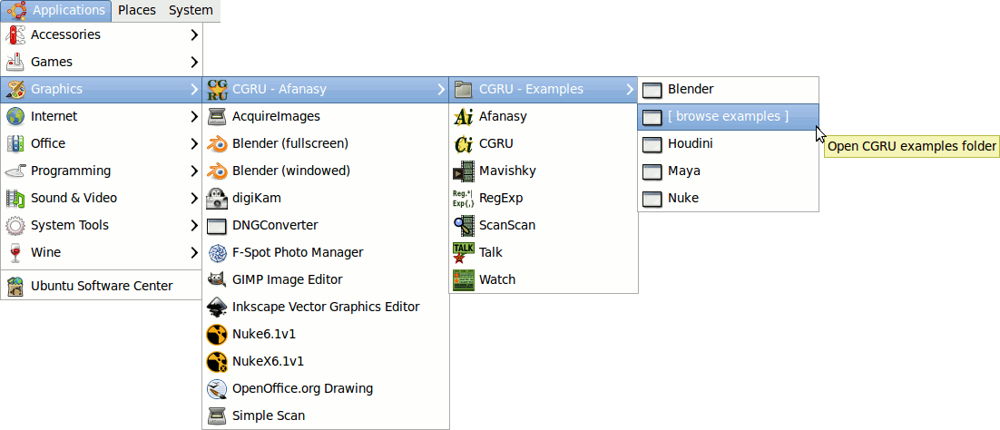

CGRU Linux Packages
Linux packages will be installed in /opt/cgru folder.
Setup Files:
-
opt/cgru/config.xml - global CGRU configuration (documentation server, default = localhost).
-
opt/cgru/afanasy/config.xml - Afanasy configuration (afanasy server, default = localhost).
-
opt/cgru/afanasy/farm.xml - Farm hosts configuration.
-
opt/cgru/afanasy/nonrootuser - Afanasy server and render user name (default = render).
-
opt/cgru/afanasy/init/depends_afserver_* - Afanasy server depends.
opt/cgru/afanasy/init/depends_afrender_* - Afanasy render depends.
See Afanasy documentation for more detailed setup description.
Applications Launch Menu:

CGRU Examples launch software with CGRU and Afanasy tools (scripts, plugins etc).
Packages Dependence Structure:
Packages Description:
afanasy-server
Afanasy server and its startup scripts.
afanasy-render
Afanasy render and its startup scripts.
afanasy-gui
Afanasy GUI includes Watch, Talk, Monitor and their menuitems.
afanasy-plugins
Afanasy plugins to launch jobs directly from other applications.
afanasy-doc
Afanasy documentation.
afanasy-webvisor
Afanasy web visor.
afanasy-common
Afanasy common files, needed by any Afanasy package.
cgru
Afanasy client packages (all except server and web visor).
Open EXR files join utility.
Movie Maker.
Regular Expression Checker.
Examples - launch scripts and scenes for applications with CGRU and Afanasy plugins setup.
cgru-common
Common files needed by CGRU, Afanasy GUI and documentation.
It is an applications menu, some images and styles for HTML.
Installation:
-
Install and uninstall scripts provided with the packages.
-
Various GUI utilities, native for each Linux distribution, can install it.
-
Commands like
dpkg -i for .deb's and rpm -i for .rmp's.
-
The best way is to put this packages in you local company Linux repository.
And to use native Linux ways to install and update software.
In this way Linux system solves packages dependences itself.
|